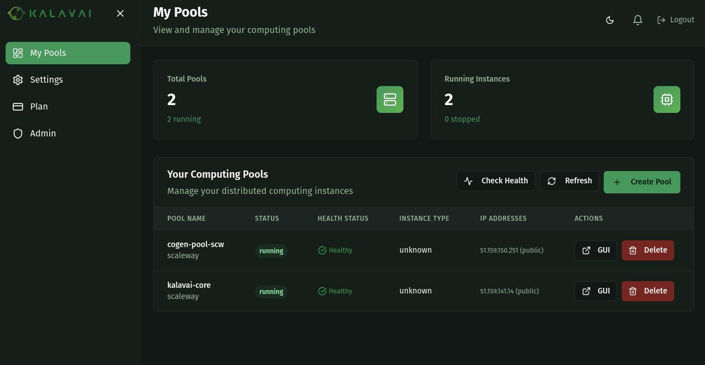
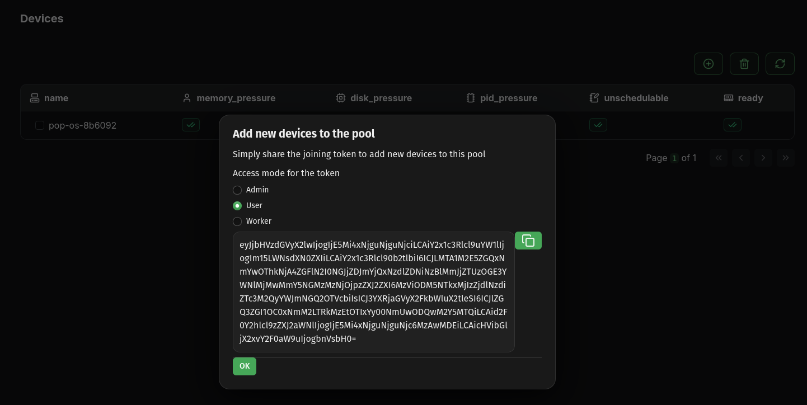
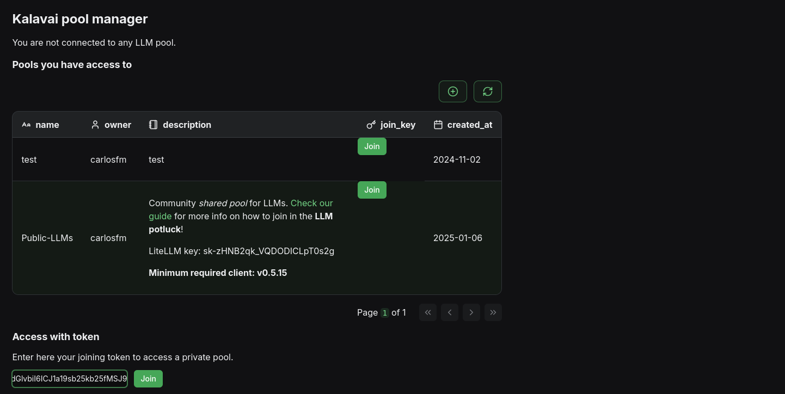
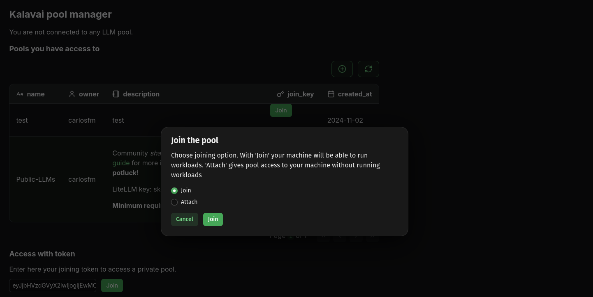
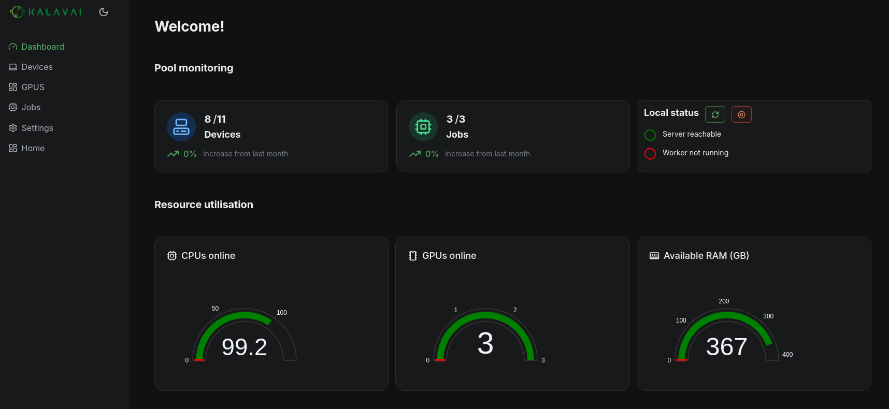
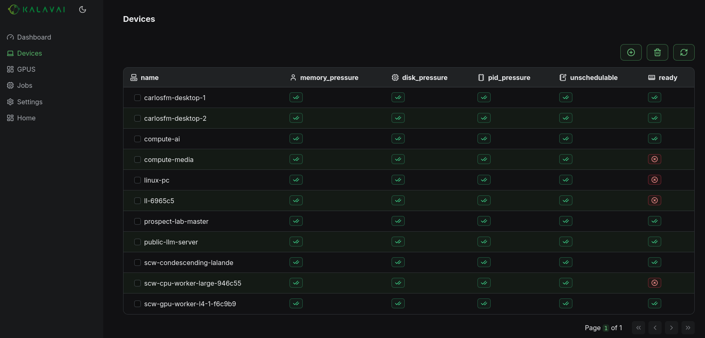
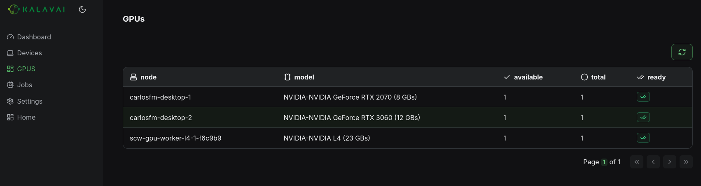
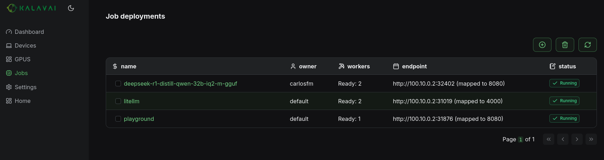
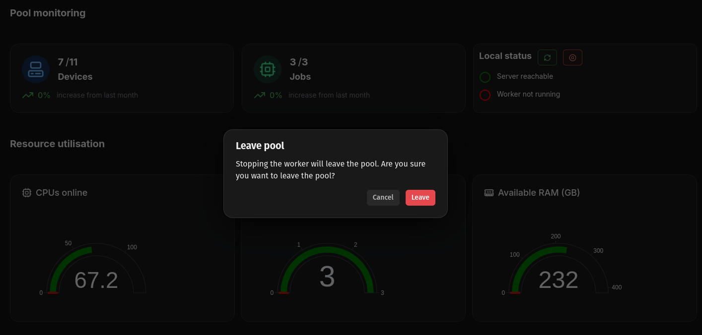

The kalavai client is the main tool to interact with the Kalavai platform, to create and manage pools and also to interact with them (e.g. deploy models). Let's go over its installation.
From release v0.5.0, you can now install kalavai client in non-worker computers. You can run a pool on a set of machines and have the client on a remote computer from which you access the LLM pool. Because the client only requires having python installed, this means more computers are now supported to run it.
Requirements to run the client
For seed nodes:
- A 64 bits x86 based Linux machine (laptop, desktop or VM)
- Docker engine installed with privilege access.
- Python 3.10+
For workers sharing resources with the pool:
- A laptop, desktop or Virtual Machine (MacOS, Linux or Windows; ARM or x86)
- If self-hosting, workers should be on the same network as the seed node. Looking for over-the-internet connectivity? Check out our managed seeds
- Docker engine installed (for linux, Windows and MacOS) with privilege access.
- Python 3.10+
Ports
Once a machine is part of a pool, the following ports must be enabled and open to accept and process workloads:
Seed nodes:
- 2379-2380 TCP inbound/outbound
- 6443 TCP inbound
- 8472 UDP inbound/outbound
- 10250 TCP inbound/outbound
- 51820-51821 UDP inbound/outbound
Worker nodes:
- 6443 TCP outbound
- 8472 UDP inbound/outbound
- 10250 TCP inbound/outbound
- 51820-51821 UDP inbound/outbound
- 5121 TCP inbound/outbound
Install the client
The client is a python package and can be installed with one command:
pip install kalavai-client
Create a local, private AI pool
Kalavai is free to use, no caps, for both commercial and non-commercial purposes. All you need to get started is one or more computers that can see each other (i.e. within the same network), and you are good to go. For over-the-internet pools, visit our managed platform.
To create your own AI pool, you will need at least one machine (the seed) and (optionally) one or more workers. See our concepts page for an overview of AI pool architecture. Note that seed machines should always be available for the platform to remain operational.
You can create a seed by self-hosting the open source platform (limited to same network machines only) or using our managed pools service (pre-configured, hosted seed with over-the-internet workers from everywhere).
1a. [Self hosted] Create a seed
Note: Currently seed nodes are only supported in Linux x86_64 machines.
In any machine with the kalavai client installed, execute the following to start a seed node:
kalavai pool start <name>
Where
$ kalavai gui start
[10:11:13] Using ports: [49152, 49153, 49154] cli.py:236
[+] Running 2/2
✔ Network kalavai_kalavai-net Created0.1s
✔ Container kalavai_gui Started0.4s
Loading GUI, may take a few minutes. It will be available at cli.py:258
http://localhost:49153
By default, the GUI is available via your browser at http://localhost:49153 (but note the port may change depending on port availability).
1b. [Managed pools] Create a seed
We offer a service to host and manage seed nodes with the following advantages: - Connect worker nodes from anywhere (over-the-internet) - Always on to keep your AI pool operational. - Great if you don't have a linux x86_64 machine to use as a seed.
Create a free account on our platform. Then, navigate to My Pools to manage and create seed nodes for your pools:

Once your seed is up and running and the status is Healthy, you can access the GUI by clicking on the GUI action.
2. Add worker nodes
Important: if you are self hosting seed nodes, only nodes within the same network as the seed node can be added successfully. This limitation does not apply to our managed seeds
Increase the power of your AI pool by adding resources from other devices. For that, you need to generate a joining token. You can do this by using the seed GUI or the CLI.
[On the seed node] Using the GUI
Use the navigation panel to go to Devices, and then click the circle-plus button to add new devices. You can select the Access mode, which determine the level of access new nodes will have over the pool:
- admin: Same level of access than the seed node, including generating new joining tokens and deleting nodes.
- user: Can deploy jobs, but lacks admin access over nodes.
- worker: Workers carry on jobs, but cannot deploy their own jobs or manage devices.

[On the seed node] Using the CLI
Alternatively, if you do not want to use the GUI, you can join from the command-line. Run the following to obtain your joining token:
kalavai pool token --worker
[On the worker node] Join the pool
Once you have the joining token, use it on the machines you want to add to the pool. Workers can use the GUI interface to make this step easier too:
kalavai gui start
Then paste the joining token in the text field under Access with token, and click join

Kalavai asks you if you want to join (run workloads in the local machine) or attach (use the node to access and control the pool, without running workloads) to the pool.

Alternatively, for command-liners, join with the CLI:
kalavai pool join <TOKEN>
Or attach with the CLI:
kalavai pool attach <TOKEN>
3. Explore resources
For both seed and worker nodes, the dashboard shows a high level view of the LLM pool: resources available, current utilisation and active devices and deployments.

Use the navigation bar to see more details on key resources:
- Devices: every machine connected to the pool and its current status

- GPUs: list of all available and utilised GPUs

- Jobs: all models and deployments active in the pool

4. Leave the pool
Any device can leave the pool at any point and its workload will get reassigned. To leave the pool, click the circle-stop button on the dashboard, under Local status card. Nodes can rejoin at any point following the above procedure.

Or do so with the CLI (from the worker machine):
kalavai pool stop
What's next
Now that you know how to get a pool up and running, check our end to end tutorial on how to self-host an LLM Pool with OpenAI compatible API and a ChatGPT-like interface for all your LLM models.